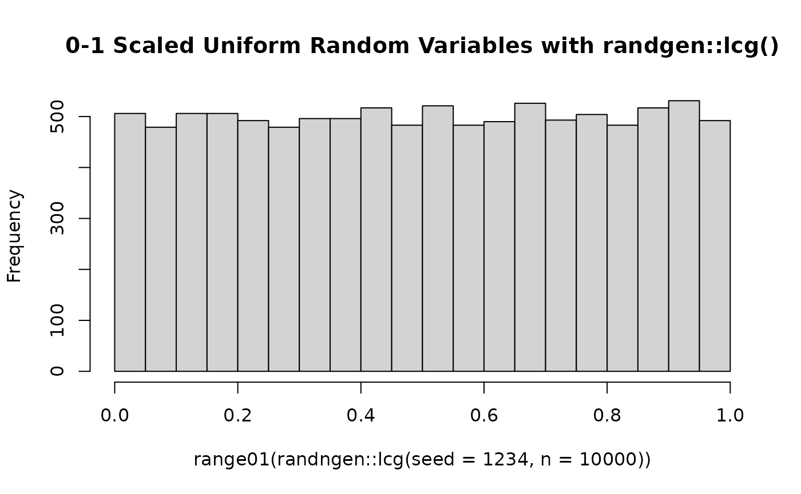
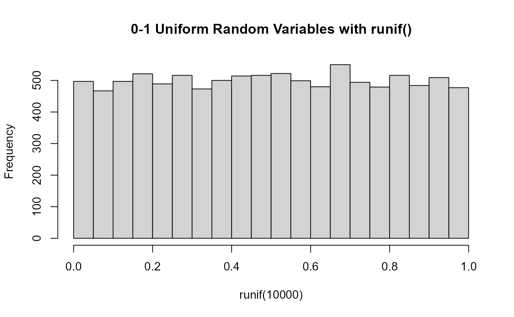

understanding-prngs.RmdPseudo-random number generators (PRNGs) power much of what goes on
“behind the scenes” in statistical and cryptographic settings. In
R, there is a pseudo-random number generator present which
allows users to generate random variables from a variety of
distributions. To check the default PRNG used by your R
version you can run the following:
# Using version 4.2.2 (at time of writing)
# Returns the methods used for
# 1. The "default" random number generation,
# 2. Normal variable generation
# 3. Discrete uniform variable generation
RNGkind()
#> [1] "Mersenne-Twister" "Inversion" "Rejection"The PRNG which R utilizes can be specified by specifying a
.Random.seed argument in the beginning of an R script or by
adjusting the default kind (and normal.kind
and sample.kind) arguments in the RNGkind or
set.seed argument.
While it is possible for one to utilize their own PRNG through use of
user-supplied random number generation, such an approach is
pedagogically complex. For users interested in working with and learning
about random number generation, present tools available still leave a
degree of complexity and/or mystery around how random numbers are
generated from the seed(s) and parameters supplied to a given PRNG. The
randngen package provides a suite of PRNGs to which aim to
be easy to use and flexible for understanding the relevant maths and
algorithms implemented by allowing users to specify all relevant
parameters.
library(randngen)
range01 <- function(x){(x-min(x))/(max(x)-min(x))}
randngen::lcg(seed = 1234, n=10000)|>
range01()|>
hist()

Random function - RDocumentation. https://www.rdocumentation.org/packages/base/versions/3.6.2/topics/Random.
Morris, T. P., White, I. R. & Crowther, M. J. Using simulation studies to evaluate statistical methods. Statistics in Medicine 38, 2074–2102 (2019).
Generating distributions from random number generators. Cross Validated https://stats.stackexchange.com/questions/637706/generating-distributions-from-random-number-generators.
L’Ecuyer, P. & Simard, R. TestU01. ACM Transactions on Mathematical Software 33, 1–40 (2007).